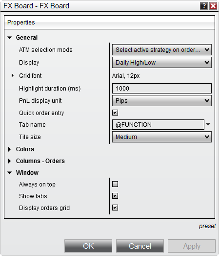

|
<< Click to Display Table of Contents >> Properties |


|
Properties
|
<< Click to Display Table of Contents >> Properties |
|
The FX Board order entry window is highly efficient by design but can also be customized to your preferences through the FX Board Properties menu.
 How to access the FX Board properties window
How to access the FX Board properties window
You can access the FX Board properties dialog window by clicking on your right mouse button within the FX Board window and selecting the menu Properties. |
 Available properties and definitions
Available properties and definitions
The following properties are available for configuration within the FX Board properties window:

Property Definitions
|
 How to set the default properties
How to set the default properties
Once you have your properties set to your preference, you can left mouse click on the "preset" text located in the bottom right of the properties dialog. Selecting the option "save" will save these settings as the default settings used every time you open a new window/tab.
If you change your settings and later wish to go back to the original settings, you can left mouse click on the "preset" text and select the option to "restore" to return to the original settings. |
Tab Name VariablesA number of pre-defined variables can be used in the "Tab Name" field of the FX Board Properties window. For more information, see the "Tab Name Variables" section of the Using Tabs page. |